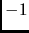

Some header fields such as ``cdp'' may be computed from existing header fields. The program suchw provides this functionality.
From the selfdoc of suchw,
... key1=cdp,... output key(s) key2=cdp,... input key(s) key3=cdp,... input key(s) ... a=0,... overall shift(s) b=1,... scale(s) on first input key(s) c=0,... scale on second input key(s) d=1,... overall scale(s)we can see that this program uses the values of 2 header fields, key2 and key3, to compute a third, key3, via the equation
... val(key1) = (a + b * val(key2) + c * val(key3)) / d ..
For example, to shift the values of the cdp header field by a constant amount, say 
% suchw <data >outdata a=-1or to add a constant amount, say 1000, to a header field, say ``tracr,''
% suchw key1=tracr key2=tracr a=1000 <infile >outfile
Another possible example is that of setting the ``gx'' field by summing the offset and ``sx'' (shot point) values using sushw and then computing the ``cdp'' field by averaging the ``sx'' and ``gx.'' Here, we are using the actual cpp locations as the cdp numbers, instead of the conventional 1, 2, 3, ... enumeration
% suchw <indata key1=gx key2=offset key3=sx b=1 c=1 | % suchw key1=cdp key2=gx key3=sx b=1 c=1 d=2 >outdata
It is possible to perform both operations in one call via:
% suchw<indata key1=gx,cdp key2=offset,gx key3=sx,sx b=1,1 c=1,1 d=1,2 >outdata